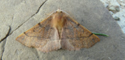
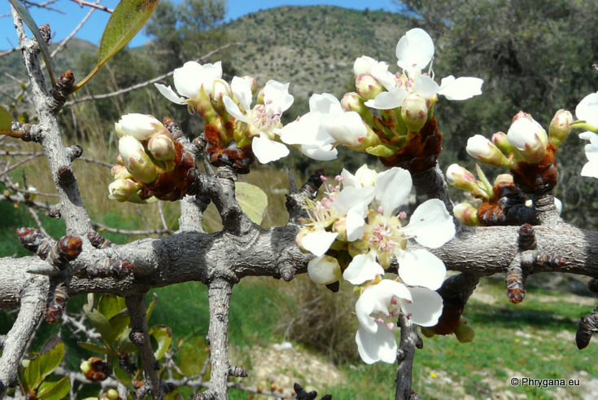
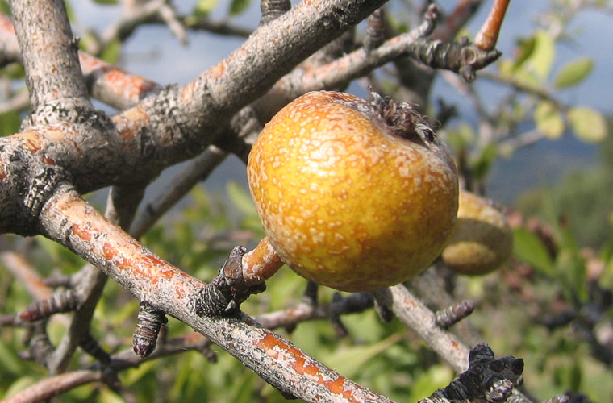

")
| PHRYGANA | Fauna | Flora | Galles | liste des espèces |
contact -
info - commentaires phrygana1 (at) gmail.com |
| Particularités crétoises | nouveautés | Mines | ressources naturelles |
| Pyrus spinosa FORSSKÄL |
| 9 | Flora | ROSACEAE | Pyrus L. |
Pyrus spinosa Melambes (Agios Giorgos) 06 novembre 2006 |
| Petit arbre épineux. | |
| Feuilles: entières, vert franc, longues de 25 - 50 (- 70) mm, larges de 10 - 20 (- 30) mm, lancéolées, pétiolées. Les jeunes rameaux sont pubescents. | |
| Fleurs: en bouquets serrés, à corolle blanche; étamines à anthères rose clair. | |
| Fruit: une petite poire de 15 à 30 mm, dure, astringeante. | |
| Hauteur: 100 - 550 cm | Type biologique: nanophanérophyte caducifolié |
| Floraison: février mars avril | |
| Altitudes: 0 - 1500 m | |
| Statut en Crète: indigène -- native | |
| Biotopes en Crète: terrains boisés, bords de chemins, olivaies, fourrés, garrigue, phrygana, maquis. | |
| Distribution: région Méditerranéenne | |
| Note: plante mellifère | |
| Plante-hôte pour:: | ||
|  |
|
|
| Colotois pennaria | Eupithecia insigniata | |
|
 Pyrus spinosa Melambes (Agios Giorgos) 28 févier 2010 |
Pyrus spinosa Apodoulu 10 juin 2005 |
|
Pyrus spinosa Melambes (Agios Giorgos) 06 novembre 2006 |
|
 Pyrus spinosa Melambes (Agios Giorgos) 06 novembre 2006 |
|
Pyrus spinosa Agios Ioannis (Amari) 19 octobre 2011 |
| 08 mars 2012 |
| © paul fontaine -- © Phrygana.eu 2007 -- 2013 |